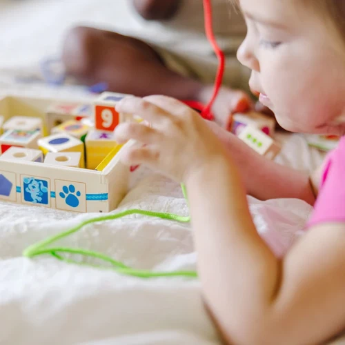
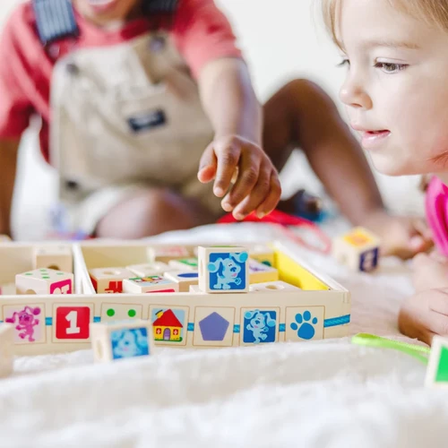
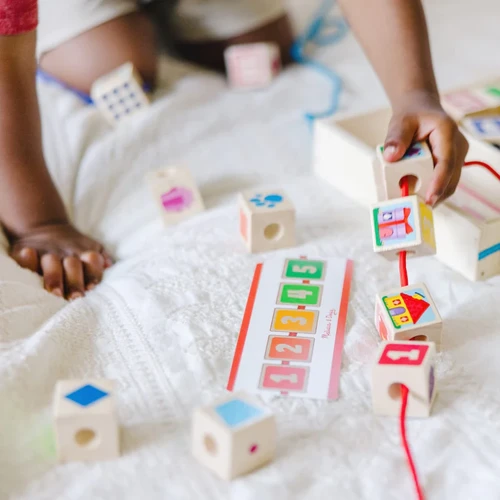
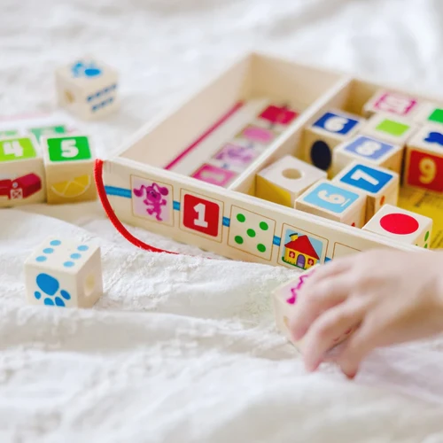
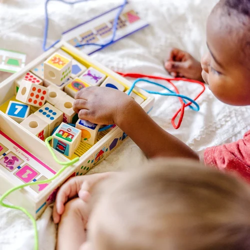
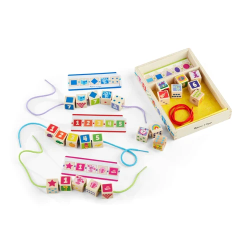
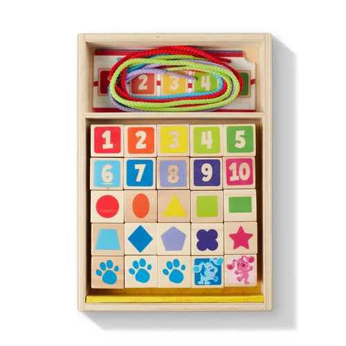

Blues Clues Wooden Lacing Beads
Paw Patrol and Blue Clues
R425Wooden Blue’s Clues & You! beads to lace on colorful cords; match to patterns on double-sided activity cards or create unique patterns and designsIncludes 25 1-inch wooden beads with shapes, numbers, colors, Blue’s Clues & You! characters, and more, 4 lacing cords, 4 double-sided activity cards, wooden storage crate for easy cleanupAn engaging and creative way to learn shapes, colors, and counting; helps develop fine motor and problem-solving skillsBlue’s Clues & You! promotes kindergarten-readiness, inspiring confidence, empowerment, and kindness in preschoolers as they develop their problem-solving, social, and developmental skills through playMakes a great gift for preschoolers, ages 4 to 7, for hands-on, screen-free playItem # 33046
Enquire about this product







Blues Clues Wooden Lacing Beads at Kids Corner KZN
Blues Clues Wooden Lacing Beads is part of our Paw Patrol and Blue Clues collection. Kids Corner KZN stocks toys for learning, pretend play, creative play, gifting and everyday childhood discovery in South Africa.
Browse more Paw Patrol and Blue Clues toys